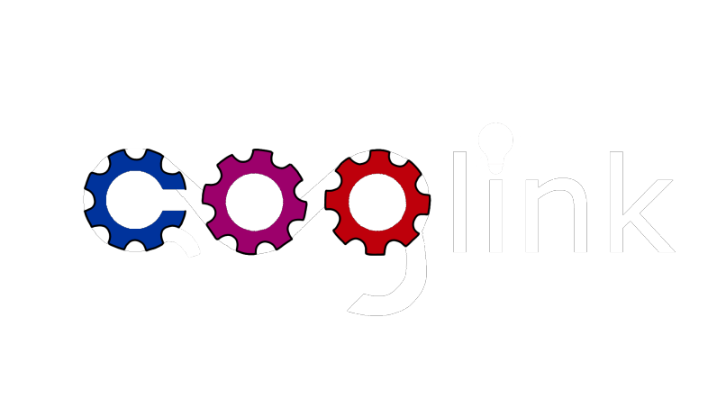

Coglink, the C Lavalink client, with the most performance above all Lavalink wrappers.
About
Coglink is a C99 Lavalink wrapper/client, which has full coverage of Lavalink API, allowing easy, but still low-level control of Lavalink.
Made with performance, security and stability in mind, so you can run anywhere you want to, with an incredible minimum of 10MB usage of RAM, allowing it to run in really low-end devices with no issues.
Why?
Using Coglink is an awesome option, it's portable, light-weight and blazing fast (:rocket:). You can easily execute any Lavalink feature, without big codes, but still with a good code.
Portability is one of the best characteristics of Coglink, if your protogen has enough RAM to run it, it will run! You will only require few libraries, which most of them are already installed in most systems.
C Lavalink client? Stability? Yep, no joke! Stability is something we are not worrying about, Coglink is well-developed, and with one of its first missings to be stable, if you report a bug, it will be fixed fastly.
Coglink was made with few libraries, but all of them are secure and stable, you shouldn't be worrying about this, worry about writing good code, because security is something already found here.
Stability
This branch is considered stable, and all functions are working properly and have been tested, what so ever Lavalink v3.7 is still not complete, breaking changes on Lavalink may come, but will rapidly be fixed in newer commits of Coglink, it's safe to be used on production.
If marked, considered stable, if not, bugs may be found.
- [x] Search (Highly stable)
- [x] loadType/track/playlist/error parsing (loadType/track highly stable)
- [x] Play (Highly stable)
- [x] Join voice channel (Highly stable)
- [x] All cleanups (Highly stable)
- [x] DecodeTrack(s) & ParseTrack(s)
- [x] Parse track, pause track, stop track, seek track, set volume
- [x] Set filter
- [x] Get Players & parse get Players
- [x] Get/parse Info
- [ ] Get/parse RouterPlanner
- [x] Get/parse Lavalink Stats (Event included)
- [x] Get Lavalink Version
- [x] Connect/disconnect Node (Highly stable)
- [x] Set event (Highly stable)
- [x] Websocket (Known bugs with close event)
- [x] IO poller (Highly stable)
Compiling
Sadly, Coglink isn't avaible on package managers, but you can compile it yourself, it's easy, don't worry, follow the guide below.
Coglink was compiled and tested (no modifications) in Ubuntu, Arch, Termux, Void. Some OSes like FreeBSD require special changes to work. Termux requires changing PREFIX, and FreeBSD removing -Ofast flag and replacing with -g. This may also be required in other OSes.
Before starting, you will need to install the required libraries for Coglink.
After installing the libraries, you will need to compile Concord.
Then, you will need to clone the Coglink's repo, this can be done by git.
After that, you can simply use make to compile Concord.
The make command will first move the header files to /usr/local/include/coglink, then it will compile the C files and "group" them into the libcoglink.a file, after all of this, make install will move libcoglink.a to /usr/local/lib, so you can use -lcoglink to use Coglink.
Using
Using Coglink is deadly easy, but before using its functions, you will need to import the header files, see which header files you will use for your bot below.
After including it, you can proceed using Coglink functions, and to compile don't forget to include the flag -lcoglink so you can use it.
For usage, you can see the guides/example folder, with a really good example of Coglink usage.
Documentation
We don't have documentation, but you can take on the guides and see what is the need since there will have everything briefly explained.
Coglink plugins
In Coglink, the creation of plugins to it is possible, that is allowed to change some structs members so it can add more features to Coglink, made by the community, to the community, here are some security measures we take to avoid plugins somehow be malicious:
Plugins are not allowed to change the members of the struct <tt>lavaInfo</tt>/<tt>client</tt>
To avoid the plugins changing the security settings of Coglink, Coglink copies the lavaInfo struct instead of passing the pointer of it, making it impossible to change the settings. And this happens with the client struct as well, to avoid changing values that might cause problems.
Concord's client struct has hidden members (OPTIONAL)
To avoid the plugin to have access to the Concord IO poller, websocket or even the bot token, Coglink removes those members in a copy of the client struct and then sends it to the plugin, so it won't have access to the private information, but warning, some plugins may need that information, you can easily allow plugins to access a type of client struct member by either changing the value of the lavaInfo->plugins->security->..., that in this case will be allowReadIOPoller, allowReadBotToken or allowReadConcordWebsocket.
Setting up a plugin
Plugins can't straight ahead work in Coglink, you need to pass the functions to Coglink from the plugin, so it can execute when some coglink function is executed, see the function below that does this:
Done, now when the function coglink_searchSong is executed, this will be executed first before Coglink runs it.
Plugin list
None, sadly, but if you made a plugin for Coglink, please send a PR adding in the line below the format: [Plugin name](Github repo of the Library) by YourGitHubusername
If you also want to make a plugin for it, but needs either help of more features, please call me on Cwift's/Coglink's Discord server, I'll be really happy to help ya! ^^
What is the reason for the creation of Coglink?
Coglink was made to retribute to someone all the help he gave to me, and I'm really thankful for his help, which made me able to create this library, without him, I wouldn't be here.
Concord is also a good library, that I consider the best Discord library ever made, but it doesn't have really good attention, and neither support for cool things, like Lavalink, that requires "advanced" knowledge of either Lavalink, Concord WebSocket, and libcurl, that we all know some people are not able to do all this work, so here Coglink is, help them make a stable code.
Coglink was inspired in Concord, its stability and performance are something that everyone would dream to have in all Discord wrappers, but most of them don't, and being realistic, none of them have, Coglink is a library with all of this in mind, to be perfect to use with Concord, an unbeatable duo.
And also, because of my country, Brazil, so it can have more recognition of so many good things it comes from here, like Lua, that most of the softwares that were created here, don't have recognition of its importance and time used to create it, and are extremely underrated.
Support
In case of any issue using it (except bugs, that should be reported on GitHub Issues), you are free to ask on Coglink's Discord server.
Credits
Even though I am the single maintainer of Coglink, many people contributed to it, thanks Cogmaster's guild members for this. And special thanks to müller#1001, without you, I wouldn't be here. :)
Some people that helped on Coglink related things:
- müller
- HackerSmacker
- Goo
Thank you all for the help! ^^
Dependencies
libcurl>= 7.56.1Concord (master/dev)2.2.0Concord's websocket2.2.0jsmn-findlatest (included on Concord 2.2.0)jsmnlatest (included on Concord 2.2.0)chashlatest (included on Concord 2.2.0)
Tested on: Ubuntu 22.04.1 x64, Arch Linux x64, Termux Aarch64 (Android 12), Void Linux latest x64, FreeBSD 13.1 x64